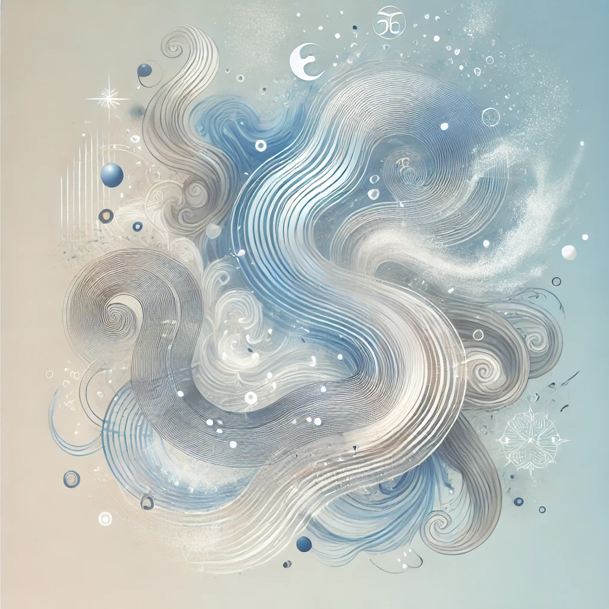
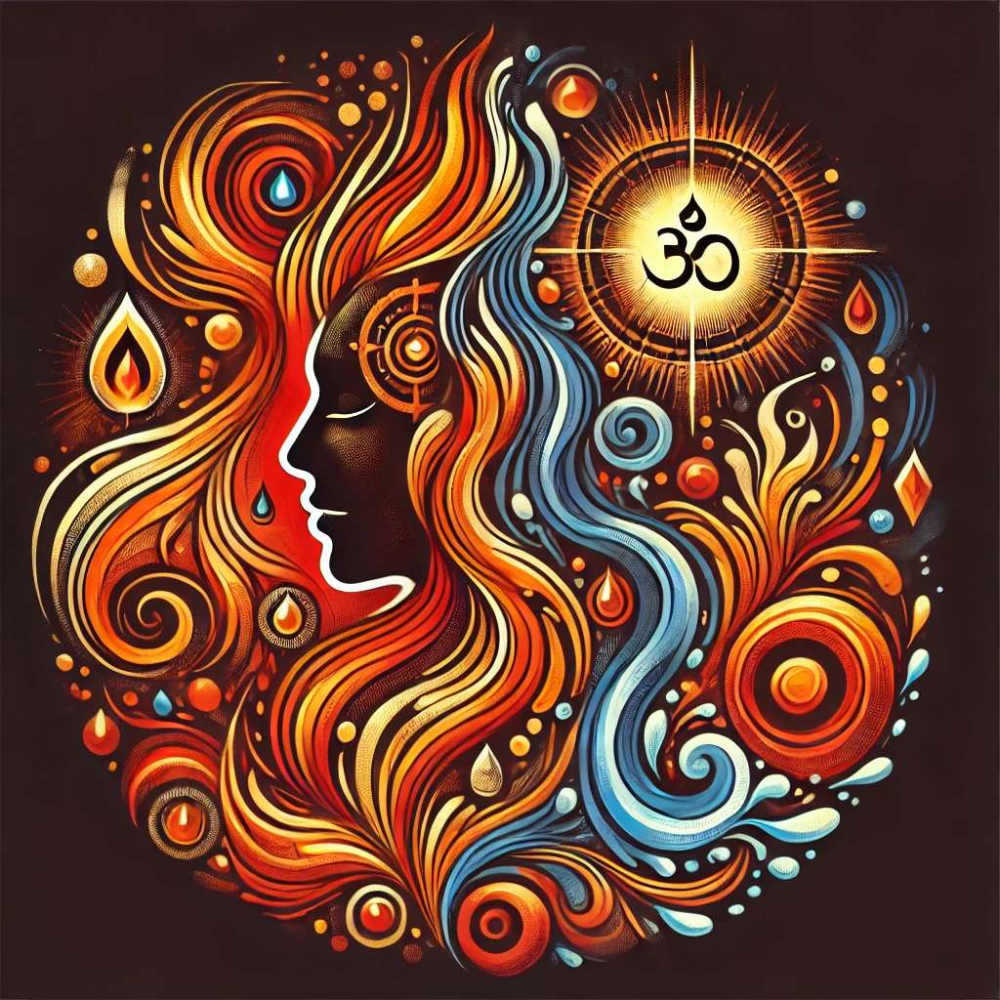

What is Prakriti?
Prakriti is the unique constitution of an individual in Ayurveda, determined by the balance of three doshas: Vata, Pitta, and Kapha. Discovering your Prakriti can guide you in making personalized lifestyle choices for a healthier, happier you.
The Three Doshas
Vata
Vata represents the elements of air and space, governing movement, circulation, and communication within the body.
Pitta
Pitta embodies the fire and water elements, responsible for digestion, metabolism, and energy transformation.
Kapha

Kapha, comprising earth and water elements, provides structure, stability, and nourishment to the body and mind.